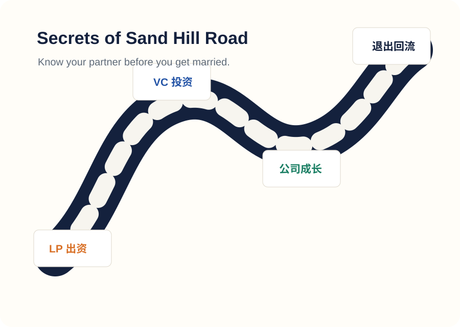

判断公司是否适合 VC：市场是否足够大，增长是否可能呈现风险投资需要的回报上限。
Scott Kupor · Venture Capital and How to Get It
创业者视角下的 VC 融资说明书
这本书的重点不是讲风险投资史，而是把 Sand Hill Road 背后的规则拆开：VC 为什么投、LP 为什么出钱、Term Sheet 怎么看、董事会如何影响公司，以及创业者如何降低信息差。

Core idea
全书核心观点
创业者和 VC 不是零和博弈的对手，而是一个可能持续十年以上的合作关系。要谈好这段关系，创业者必须理解 VC 的资金来源、回报压力、决策方式、法律条款和治理逻辑。
理解 VC 的筛选逻辑、pitch 方式、Term Sheet 经济条款和治理条款。
董事会、投资人和创始人进入长期协作，关键在于透明、信任和责任边界。
IPO、并购或失败退出决定资本如何回流 LP，也影响 VC 下一只基金能否继续募资。
VC lifecycle
VC 钱从哪里来，又到哪里去
Vocabulary
展示时一定要解释的术语
LP
Limited Partner，基金出资人，如大学捐赠基金、养老金、家族办公室等。
GP
General Partner，真正管理基金、寻找项目、做投资决策的 VC 合伙人。
Term Sheet
投资条款清单，决定估值、清算优先权、董事会席位、保护性条款等核心规则。
Board
董事会，公司治理中心，融资后创始人需要和投资人共同在这里做重大决策。
Liquidation Preference
清算优先权，决定公司出售或清算时投资人和普通股股东的分钱顺序。
IPO / M&A
最常见的好退出路径：上市或被收购，让创业者、员工、VC 和 LP 获得流动性。
Chapter guide
章节概括
Presentation
30 分钟讲解提纲
1. 为什么创业者要懂 VC
用“VC 和创业者是一段十年婚姻”切入，说明信息差会影响融资、控制权和退出。
2. VC 的商业模式
讲清楚 LP、GP、基金期限、管理费、carry 和投资组合回报压力。
3. 融资实战流程
从公司设立、找 VC、pitch 到 Term Sheet，把创业者最容易踩坑的环节串起来。
4. 融资后的权力结构
解释董事会、治理条款、困难融资和退出，强调钱进来之后合作才真正开始。